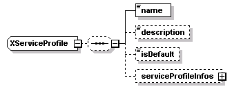
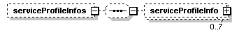
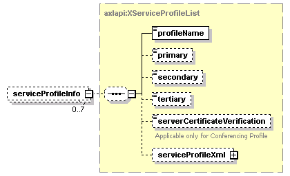

| diagram |  | ||
| namespace | http://www.cisco.com/AXL/API/10.5 | ||
| children | name description isDefault serviceProfileInfos | ||
| used by |
|
||
| source | <xsd:complexType name="XServiceProfile"> <xsd:sequence minOccurs="0"> <xsd:element name="name" type="xsd:string" nillable="false" minOccurs="1" maxOccurs="1"/> <xsd:element name="description" type="xsd:string" nillable="false" minOccurs="0" maxOccurs="1"/> <xsd:element name="isDefault" type="axlapi:boolean" nillable="false" minOccurs="0" maxOccurs="1"/> <xsd:element name="serviceProfileInfos" minOccurs="0" maxOccurs="1"> <xsd:complexType> <xsd:sequence minOccurs="0"> <xsd:element name="serviceProfileInfo" type="axlapi:XServiceProfileList" minOccurs="0" maxOccurs="7"/> </xsd:sequence> </xsd:complexType> </xsd:element> </xsd:sequence> </xsd:complexType> |
| diagram | |||||
| type | xsd:string | ||||
| properties |
|
||||
| source | <xsd:element name="name" type="xsd:string" nillable="false" minOccurs="1" maxOccurs="1"/> |
| diagram | |||||||||
| type | xsd:string | ||||||||
| properties |
|
||||||||
| source | <xsd:element name="description" type="xsd:string" nillable="false" minOccurs="0" maxOccurs="1"/> |
| diagram | |||||||||
| type | axlapi:boolean | ||||||||
| properties |
|
||||||||
| facets |
|
||||||||
| source | <xsd:element name="isDefault" type="axlapi:boolean" nillable="false" minOccurs="0" maxOccurs="1"/> |
| diagram |  | ||||||
| properties |
|
||||||
| children | serviceProfileInfo | ||||||
| source | <xsd:element name="serviceProfileInfos" minOccurs="0" maxOccurs="1"> <xsd:complexType> <xsd:sequence minOccurs="0"> <xsd:element name="serviceProfileInfo" type="axlapi:XServiceProfileList" minOccurs="0" maxOccurs="7"/> </xsd:sequence> </xsd:complexType> </xsd:element> |
| diagram |  | ||||||
| type | axlapi:XServiceProfileList | ||||||
| properties |
|
||||||
| children | profileName primary secondary tertiary serverCertificateVerification serviceProfileXml | ||||||
| source | <xsd:element name="serviceProfileInfo" type="axlapi:XServiceProfileList" minOccurs="0" maxOccurs="7"/> |